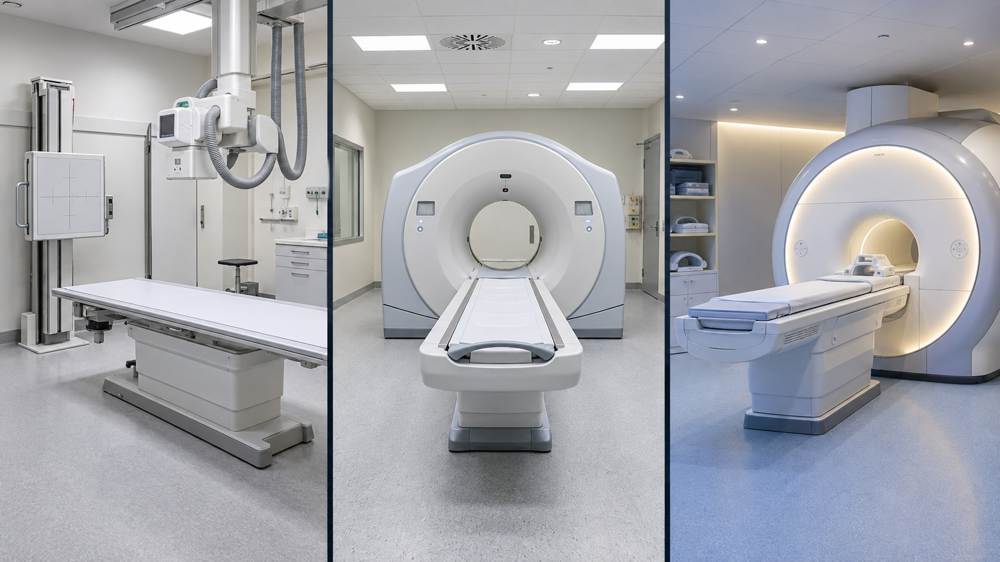
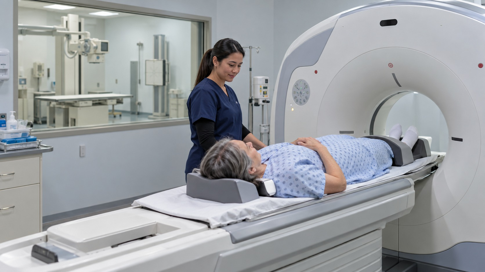

Szybka odpowiedź
Rentgen (RTG) tworzy obraz promieniami X, a rezonans (MRI) wykorzystuje pole magnetyczne i fale radiowe, więc nie naraża na promieniowanie jonizujące. Tomografia (CT) także używa promieni X, lecz składa wiele obrazów w przekroje ciała. Jeśli badanie wymaga wyboru metody, lekarz bierze pod uwagę narząd, pytanie kliniczne, implanty i ewentualny kontrast.
Kluczowe wnioski
- RTG i CT używają promieniowania jonizującego; MRI go nie używa.
- CT zwykle daje większą dawkę niż zwykłe zdjęcie RTG, ale zakres zależy od badania.
- Kontrast jodowy i gadolinowy to różne środki o różnych przeciwwskazaniach.
- MRI wymaga dokładnego zgłoszenia implantów, odłamków metalu i urządzeń elektronicznych.
Jak powstaje obraz RTG, CT i MRI?
RTG rejestruje projekcję po przejściu promieni X przez ciało. CT obraca źródło promieniowania wokół pacjenta i komputerowo składa wiele projekcji w przekroje. MRI wykorzystuje silne pole magnetyczne, gradienty i fale radiowe; nie używa promieniowania jonizującego.
Więcej szczegółów nie zawsze znaczy lepszą odpowiedź. Metodę dobiera się do narządu i pytania klinicznego. Kontekst podstawowych badań opisuje przewodnik badań po 50-tce, a ograniczenia algorytmów analizujących obrazy — artykuł o AI w medycynie.

Kiedy częściej wybiera się RTG lub CT?
RTG często wystarcza do oceny wybranych problemów kości i klatki piersiowej. CT jest szybkie i tworzy przekroje, dlatego bywa wybierane przy urazach, podejrzeniu krwawienia, chorobach płuc lub ocenie narządów jamy brzusznej. O wyborze decyduje wskazanie, nie sama dostępność aparatu.
CT zwykle oznacza większą dawkę niż pojedyncze zdjęcie RTG, ale dawka zależy od obszaru, protokołu i budowy pacjenta. Trzeba poinformować personel o możliwej ciąży. Gdy problem dotyczy stawu po wysiłku, pomocny jest też tekst o tym, co naprawdę wiadomo o bólu kolan.

Kiedy MRI ma przewagę i jakie ma ograniczenia?
MRI szczególnie dobrze różnicuje wiele tkanek miękkich, mózg, rdzeń, więzadła i część narządów. Badanie trwa dłużej, jest głośne i wymaga pozostania bez ruchu. Pole magnetyczne działa stale, dlatego kwalifikacja bezpieczeństwa zaczyna się jeszcze przed wejściem do pracowni.
Nie każdy implant wyklucza MRI, lecz pracownia musi znać dokładny model i warunki producenta. Trzeba zgłosić urządzenia wszczepione, metaliczne odłamki, klaustrofobię i trudność leżenia. Dobre przygotowanie dokumentów przypomina porządkowanie wyników badań kontrolnych.
Co trzeba wiedzieć o kontraście?
W CT stosuje się zwykle dożylny kontrast jodowy, a w MRI środki zawierające gadolin. To różne preparaty. Przed podaniem zespół pyta o wcześniejsze reakcje, choroby nerek, przyjmowane leki i inne czynniki ryzyka. Nie każde badanie wymaga kontrastu.
Nie odstawiaj samodzielnie leków i nie zmieniaj nawodnienia na podstawie internetowej listy. Instrukcja zależy od rodzaju badania, drogi podania i sytuacji pacjenta. Aktualną historię chorób i wyniki przygotuj zgodnie z listą badań po 50-tce.
| Cecha | RTG | CT | MRI |
|---|---|---|---|
| Technologia | Promieniowanie X | Promieniowanie X i rekonstrukcja | Pole magnetyczne i fale radiowe |
| Typ obrazu | Zwykle projekcja 2D | Przekroje | Przekroje o wysokim kontraście tkanek |
| Czas | Krótki | Zwykle krótki | Zwykle dłuższy |
| Główna kontrola | Ciąża i zakres | Dawka; przy kontraście także nerki i reakcje | Implanty i metal; przy kontraście także nerki |
Najbezpieczniejsze badanie to takie, które odpowiada na właściwe pytanie przy najmniejszym rozsądnym ryzyku.
Najczęściej zadawane pytania
Czy rezonans promieniuje?
Nie używa promieniowania jonizującego; wykorzystuje silne pole magnetyczne i fale radiowe.
Czy CT ma większą dawkę niż RTG?
Zwykle tak, ponieważ wykorzystuje wiele projekcji, ale rzeczywista dawka zależy od obszaru i protokołu.
Czy każdy implant wyklucza MRI?
Nie. Trzeba sprawdzić dokładny model i warunki producenta z pracownią MRI.
Czy kontrast jest zawsze potrzebny?
Nie. Decyzja zależy od pytania klinicznego i protokołu; kontrast może ujawnić informacje niewidoczne bez niego.
Źródła
- FDA — Medical X-ray Imaging
- FDA — MRI safety
- RadiologyInfo — contrast materials
- RadiologyInfo — radiation dose in X-ray and CT
Uwaga: Artykuł ma charakter informacyjny i edukacyjny. Nie zastępuje konsultacji, diagnozy ani indywidualnego leczenia.